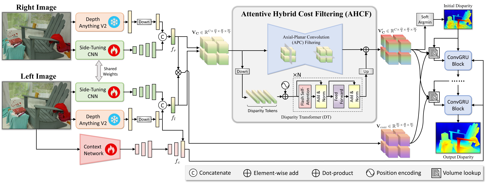
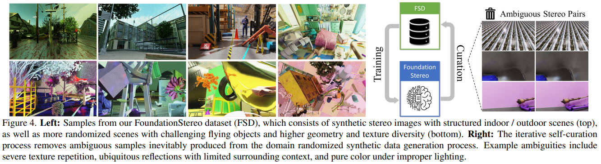
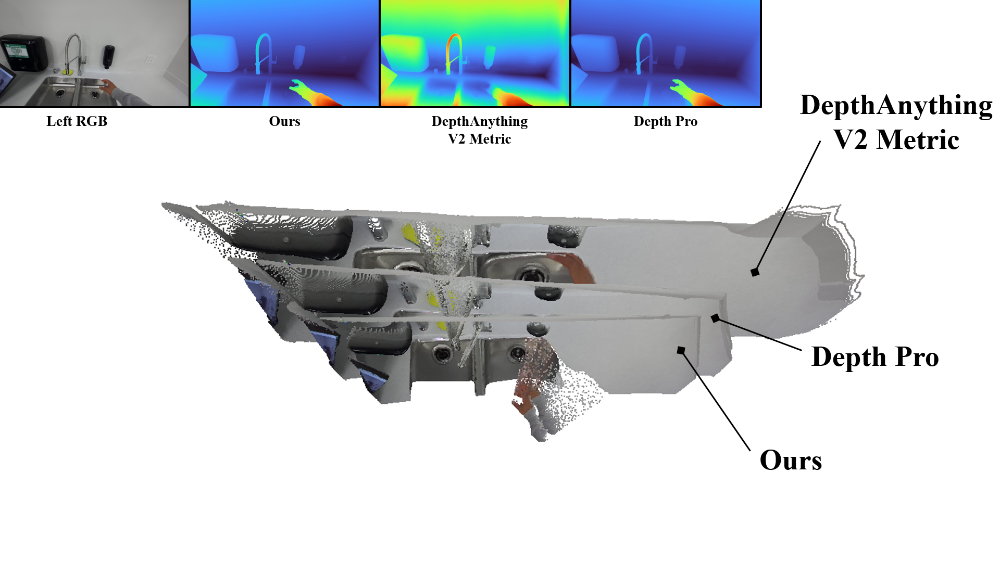

Tremendous progress has been made in deep stereo matching to excel on benchmark datasets through per-domain fine-tuning. However, achieving strong zero-shot generalization — a hallmark of foundation models in other computer vision tasks — remains challenging for stereo matching. We introduce FoundationStereo, a foundation model for stereo depth estimation designed to achieve strong zero-shot generalization. To this end, we first construct a large-scale (1M stereo pairs) synthetic training dataset featuring large diversity and high photorealism, followed by an automatic self-curation pipeline to remove ambiguous samples. We then design a number of network architecture components to enhance scalability, including a side-tuning feature backbone that adapts rich monocular priors from vision foundation models to mitigate the sim-to-real gap, and long-range context reasoning for effective cost volume filtering. Together, these components lead to strong robustness and accuracy across domains, establishing a new standard in zero-shot stereo depth estimation.
(Interact with the point cloud below)
The Side-Tuning Adapter (STA) adapts the rich monocular priors from a frozen DepthAnythingV2, while combined with fine-grained high-frequency features from multi-level CNN for unary feature extraction. Attentive Hybrid Cost Filtering (AHCF) combines the strengths of the Axial-Planar Convolution (APC) filtering and a Disparity Transformer (DT) module to effectively aggregate the features along spatial and disparity dimensions over the 4D hybrid cost volume. An initial disparity is then predicted from the filtered cost volume, and subsequently refined through GRU blocks. At each refinement step, the latest disparity is used to look up features from both filtered hybrid cost volume and correlation volume to guide the next refinement. The iteratively refined disparity becomes the final output.

Scene:
Endeavor Wall Robot StreetMethod:
Ours IGEV Selective-IGEV CREStereo CroCo v2We compare with SOTA monocular metric depth estimation methods. Despite their recent advancements, ours still yields the most accurate metric scale point cloud. Play with the below interactive 3D viewer to learn more.
Method:
Ours DepthAnythingV2 Depth ProWe compare to common RGBD cameras including RealSense, Kinect, Zed. Ours uses the same stereo image from Zed as input. Different cameras may use different filtering steps for postprocessing, wherease the point cloud accuracy should not be affected.
Scene:
ToolboxResult:
Ours Zed RealSense Kinect Azure@article{wen2025stereo,
title={FoundationStereo: Zero-Shot Stereo Matching},
author={Bowen Wen and Matthew Trepte and Joseph Aribido and Jan Kautz and Orazio Gallo and Stan Birchfield},
journal={arXiv},
year={2025}
}